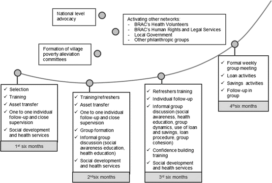
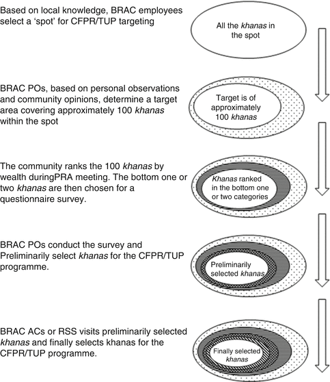

16.1 Introduction
Bangladesh, born out of a devastating civil war and one of the world’s ugliest modern genocides in 1971, is a land of immense beauty and potential (Haq 1979). It is a densely populated country with more than 1,100 people per km2. Despite the regular occurrence of disasters both natural (e.g., floods, cyclones, and tidal waves) and man-made (e.g., price hikes, food insecurity, political conflicts, military rule etc.), poor governance, and the limited quality of human capital, Bangladesh has succeeded in maintaining an annual economic growth rate of around 6 % in recent years. The country has recorded a steady decline in poverty (corresponding to an upper poverty line of <2,122 kcal/person/day) from 53 % of the population in 1995 to 32 % in 2010, calculated on the basis of the “cost of basic needs” approach (BBS 2011).
One of the distinguishing features of the current poverty alleviation scenario in Bangladesh is the participation of nongovernmental organizations (NGOs) as partners in development—supplementing and complementing government efforts (Lovell 1992; Fernando and Meyer 2002; Mondal 2004; Grameen Bank 2005), and the use of microcredit as “a critical anti-poverty tool for the poorest, especially women” (Micro-credit Summit 1997). These latter programs extend small loans to poor people (mainly women) for income generating self-employment activities and thereby diminish seasonal vulnerability through diversification of income earning sources, building assets, and strengthening mechanisms for coping with crises (Rahman 1995; Mustafa et al. 1996; Hussain 1998; MkNelly and Dunford 1998; Panjaitan-Drioadisuriyo and Cloud 1999; Zaman 2000). Such efforts enhance women’s income earning potential, improve their role in nontraditional activities in the informal sector, and facilitate empowerment (Hashemi et al. 1996). Micro-credit programs have been associated with increased enrollment of poor children in schools who had either been drop-outs or had never enrolled (Khandker 1998; Barnes et al. 2001; Chowdhury et al. 2002). The importance of microcredit programs as a health intervention tool (Schuler and Hashemi 1994; Nanda 1999; Barnes et al. 2001; Pitt et al. 2003) and as an efficient and equitable tool for directing resources to women (Kabeer 2001) have also been emphasized in the literature.
The poor in Bangladesh are not homogeneous (Table 16.1). The proportion of the population falling below the lower poverty-line (corresponding to the consumption of 1,805 kcal per capita/day or less) is variously termed the “extremely poor,” “hardcore poor,” or “ultra-poor,” and comprise around 25 % of the population (BBS 2007). These households commonly have ≤10 decimals (0.04 ha) of land, no productive assets, no income-earning male household member, and depend upon earnings from the wage-labor of female household members for survival. This group is unable to participate fully in social and economic activities (including governmental decision making) that have an impact on their daily lives. This social exclusion denies them access to essential goods and services, such as health care, which are available to other segments of the population (Santana 2002; Nayar 2007). Experiences have shown that regular microcredit/microfinance programs are not suited to their livelihood styles for a number of structural reasons. Included among these are some supply-side factors such as the harsh discipline of microcredit/microfinance institutions, the absence of a safety net in case of default of loan payments, and demand-side factors such as aversion to risk-taking and fear of making cash transactions (Halder and Mosley 2004; Sulaiman and Gulesci 2008).
Table 16.1
Differences between poverty groups in Bangladesh with respect to key characteristics
Characteristics | Extremely poor (<1,805 kcal per capita/day) | Moderately poor (1,805–2,122 kcal per capita/day) | Non-poor (≥2,122 kcal per capital/day) | Significance (%) |
|---|---|---|---|---|
No land (% of households) | 9.8 | 8.2 | 5.4 | <1 |
10 decimals of land (1 acre = 100 decimals) (% of households) | 50.3 | 45.0 | 33.3 | <1 |
Average agricultural day labor in each household | 0.5 | 0.3 | 0.1 | <1 |
Average non-agricultural day labor in each household | 0.4 | 0.4 | 0.2 | <1 |
Female-headed households (%) | 10.8 | 8.1 | 10.7 | <1 |
Literate (% per household, ≥6 years) | 29.7 | 39.4 | 60.4 | <1 |
16.2 CFPR: The Customized Program for the Ultra-poor by BRAC
Given the fact that regular microcredit/microfinance programs were found unsuitable for addressing the needs of the ultra-poor, a number of options were attempted during the development of a program by BRAC. During the late 1980s BRAC collaborated with the United Nations World Food Programme to develop a program specifically for assisting destitute women. The program, named “Income Generation for Vulnerable Group Development” (IGVGD), successfully combined skills training and microcredit/microfinance with food aid to make participating women self-sustainable by the end of the 24-month aid cycle, and was later scaled up nationally. However, evidence showed that the program was unable to provide a sustainable livelihood for all participants (around 40 % of the women dropped out of each cycle) and that further re-designing was needed to be able to assist some households (Matin and Hulme 2003).
Experiences of the IGVGD program and BRAC’s own research (Halder and Mosley 2004) led to the design of a customized grants based, asset transfer and development program for the ultra-poor. This second program named “Challenging the Frontiers of Poverty Reduction” (CFPR), aimed to lift participants out of extreme poverty within a period of 24-months and to facilitate their entry into mainstream development programs. To achieve this, the program combined “pushing down” (interventions specifically tailored for the ultra-poor) and “pushing out” (interventions to create an enabling environment for the ultra-poor) strategies. The different components of the CFPR program with associated rationale are shown in Table 16.2. The particular nature of the asset transfers is decided through a consultative process between selected ultra-poor women and the local BRAC staff, and includes livestock, poultry, leased land, wage labor, street vending, etc. (Alarakhia and Barua 2005).
Table 16.2
The challenging the frontiers of poverty reduction/TUP program components and their rationale (Matin et al. 2008)
Component | Rationale |
|---|---|
Integrated targeting methodologies | Effective targeting of the extremely poor |
Income-generating asset transfer (Range: Tk 3,000–9,000 [US$50–150]) | Build an economic asset base |
Income generation skill training and regular refreshers, e.g., poultry/livestock rearing, vegetable cultivation, shoe making etc. | Ensure a good return from asset transferred |
Technical follow-up of enterprise operations | Ensure a good return from asset transferred |
Provision of all support inputs for the enterprise | Ensure a good return from asset transferred |
Monthly stipends for subsistence [Tk 10/day(US$0.17/day) for 12–15 months] | Reduce opportunity cost of asset operations |
Social development, e.g., social awareness and confidence building, legal awareness, social action on early marriage/dowry etc. | Knowledge and awareness of rights and justice |
Mobilization of local elite for support (pro-poor advocacy through seminar, workshop, and popular theatre) | Create an enabling environment |
Health support | Reduce costly morbidity |
The health component of the program that was tailored specifically for the ultra-poor consisted of “essential health care” services (maternal health, family planning, communicable disease control, children’s health, home based TB treatment, and basic curative care); counseling and consumer information on health and health care services (to overcome information barriers); free installation of latrines and tube wells (to overcome disease transmission); identity cards for facilitated access to health care facilities (to overcome social exclusion); and financial assistance for diagnostics and hospitalization if needed (to overcome financial barriers). The health inputs served as a safety net against the income eroding effect of moderate to severe morbidity. The chronology of the execution of the program is shown in Fig. 16.1.

Fig. 16.1
The challenging the frontiers of poverty reduction program activities (Matin et al. 2008)
16.3 Targeting Process
The most critical step in the implementation of the CFPR program was the targeting process as selection of appropriate participants is key to the success of the program (Rahman and Ali 2006; Perkins 2008). A meticulous, evidence and experience based process with the active participation of villagers and the local BRAC staff was followed to accomplish this. The successive steps of the process are described below in Fig. 16.2.

Fig. 16.2
The stages of the challenging the frontiers of poverty reduction program targeting process in Bangladesh (Rahman and Ali 2006)
Stage I: Geographical targeting. The districts and sub-districts for the CFPR program were identified using spatial poverty and vulnerability maps prepared by the World Food Programme (Hollema and Begum 2002). Once these were selected, BRAC staff at the branch level1 used their local knowledge and experience to select particular village communities with the highest concentration of poor people. Usually selected sites comprised of a cluster of approximately 100 households (demarcated by geographical landmarks) that in some cases extend into the neighboring villages when there are insufficient households in a particular village.
Stage II: Participatory Wealth Ranking (PWR). CFPR’s three member selection team formed at the branch level, comprised of a facilitator, a recorder, and an organizer, undertake the task of selecting the ultra-poor households at the site level. The organizer presents the program and invites the villagers to participate in the PWR meeting during a rapport building tour of the village. The team especially encourages women to participate in the PWR meeting. In consultation with villagers a neutral venue and a convenient time for holding the meeting are decided.
On the day of the meeting the villagers sit in a rectangle with the facilitator and recorder in the middle. The process begins with a social mapping of the site with the active participation of the villagers, to locate the households with reference to landmarks such as a ponds, bushes, mosques, schools etc. A map is drawn on the ground with a stick by the facilitator with the help of the villagers that is later transferred on paper by the recorder. Starting from one corner of the map, the villagers and BRAC staff identify houses serially. With the placement of each house marker, information on the name of household head, the name of the father of household head, and the profession of the household head are recorded in a large ledger and on a small card. Throughout this process the facilitators try their best to encourage participation of the assembled villagers, especially the women.
The villagers are then asked to rank the households according to their asset wealth. The facilitator holds up the cards with household information one by one and asks the assembled villagers to categorize the household according to the level of poverty among: rich, middle-class, lower-middle class, poor, and ultra-poor. Usually the participants rank these households into five economic categories, but sometimes six categories have been used. The bottom one or two are called the “community defined ultra-poor.” This is a dynamic process and claims and counter-claims, arguments, negotiations etc., occur before the villagers arrive at a consensus. The facilitator ensures that all the voices are heard.
Stage III: Mini survey to cross-check against program specified criteria. On the next day, the “community defined ultra-poor” households are visited by the BRAC staff to conduct an on-the-spot survey to verify findings from the PWR meeting and also to cross-check against some program-defined exclusion (all binding)2 and inclusion (three out of five to be satisfied)3 criteria for entry into the programs. A preliminary list of selected households is then made for final verification.
Stage IV: Final verification and selection. The households in the preliminary list are then scrutinized by senior staff from either regional or the head offices and judged based on the facts on hand and their expert opinions to finalize the lists of “selected” households for asset transfer and other inputs. The effectiveness of the “targeting” process in identifying the extremely poor (ultra-poor) households is confirmed by empirical findings (Table 16.3) (Matin and Halder 2004).
Table 16.3
Group differences: how well did the challenging the frontiers of poverty reduction program target? (Matin and Halder 2004)
Variables | Selected as beneficiary (A) (%) | Not selected as beneficiary (B) (%) |
|---|---|---|
Marital status | ||
Widowed | 30 | 16*** |
Divorced/abandoned | 15 | 5*** |
Demographic resources | ||
HHs where husband present but FHHH | 17 | 4*** |
HHs with physically able husbands | 43 | 71*** |
HHs with no adult male | 36 | 15*** |
HHs with working school aged children | 18 | 10*** |
Assets—land | ||
HHs that do not own arable land | 98 | 88*** |
HHs that do not own the land their house is located on | 62 | 38*** |
Assets—non-land | ||
HHs with no other asset beside the home | 56 | 43*** |
A number of interesting issues emerged from the PWR exercises. It gave a chance to the BRAC staff to intimately interact with villagers, to explain the purpose of the PWR to them, and to understand how “poverty” is envisaged by them. The very detailed knowledge of the poor households backed by community endorsement make their tasks easier for the subsequent steps. Thus the selection of households is evidence based and transparent, which facilitates a sense of proprietorship of the program by the community. It also kept the staff aware of societal gender biases, since BRAC staff had to work really hard to get the voices of the women properly heard and taken into account while the PWRs were in progress.
16.4 Lessons Learned
Much like the “inverse care law” in health care,4 experiences show that the poorest have the least chance to benefit from any poverty alleviation program unless they are specifically targeted (Morduch and Haley 2001). Even when targeted, there is a tendency to select the relatively better-off among the poor (Navajas et al. 2000). However, targeting is not an end in itself, it is just the beginning of a long process. There may be different methods of targeting the poorest, but evidence shows that for success, the intensity of implementation is often more important than methods (Coady et al. 2002). The CFPR method was particularly successful because the program put organization-wise emphasis on the rigorous implementation of each step of the process throughout the scaling-up phases from 2005 onward. The key to this was facilitating the active participation of villagers in the community mapping of households and the PWR process. In the mapping phase, disagreements and confusion can occur about the definition of a household and whom to include as members, which were ultimately resolved through transparent group discussions (Rahman and Ali 2006). This reduced the chance of missing any particular household, especially the (sometimes) invisible households of the ultra-poor.
Mapping is followed by a process of ranking the households according to wealth and livelihood condition. For enumerating the latter, direct knowledge of the participants is essential. Sometimes intense debates and quarrels occur about where to rank a particular household, but ultimately the villagers come to a consensus democratically (Rahman and Ali 2006). The facilitating BRAC staff questions the reasons behind the ranking before accepting them to ensure that the process is consistent. The process also helps make the “invisible” households (e.g., destitute households living at the fringes of the villages about whom most of the villagers are not well aware) more visible to their communities. The active participation of the villagers in the mapping and PWR stages makes the selection process transparent and allows the wisdom of the community to be taken into consideration, which greatly facilitates implementing the program at subsequent stages.
Another facilitating factor in the targeting process is the development of a dedicated workforce by BRAC. Acknowledging the fact that the CFPR program would require a different kind of worker than the microcredit/microfinance program, BRAC recruited a group of fresh graduates, trained them how to interact with the poorest with compassion and empathy, and managed them with supportive supervision to achieve desired results. All of these efforts are done to instill a “fresh perspective and a new work culture” among them, to help the staff view the discourse of poverty from an unbiased perspective, and to provide a real-life understanding of the stratification of poverty (Matin et al. 2008). A sense of pride and proprietorship develops, which motivates the staff’s work. Last but not the least, the objective verification of the information obtained from the PWR through the survey is absolutely necessary for both allaying any subjective biases or misinformation, and for matching with program-specific selection criteria. This effectively narrows down the range of potential beneficiaries and facilitates the selection of the correct persons/households for the appropriate type of intervention.
16.5 Conclusion
A participatory process that involves local communities and that accommodates local knowledge and wisdom is the most pragmatic way of identifying the poorest households in a community. However, for this process to be successful, meticulous implementation by a motivated workforce is also needed. The targeting process developed by the CFPR program and implemented by a cadre of motivated workers helped BRAC reach the poorest of the poor in a consistent and sustained manner.
Acknowledgements
This paper is based on work done by researchers of the CFPR group at the BRAC Research and Evaluation Division as cited in the text. Any errors may be attributed to the author. Abdur Razzaque of BRAC RED is acknowledged for re-creating the figures.
References
Alarakhia S, Barua P (2005) Sector scan of TUP enterprises: identifying determinants of sustainability. RED reports. Research and Evaluation Division, Bangladesh Rural Advancement Committee, Dhaka. http://www.bracresearch.org/reports/sector_scan_report.pdf. Accessed 10 Feb 2013
Barnes C, Gaile G, Kimbombo R (2001) Impact of three microfinance programs in Uganda USAID-AIMS paper. Management of Systems International, Washington, DC
BBS (2007) Report of the household income and expenditure survey 2005. Bangladesh Bureau of Statistics, Planning Commission, Ministry of Planning, Government of Bangladesh, Dhaka
BBS (2011) Preliminary report on household income and expenditure survey 2010. Bangladesh Bureau of Statistics, Planning Commission, Ministry of Planning, Government of Bangladesh, Dhaka
Chowdhury AMR, Nath SR, Choudhury RK, Ahmed M (2002) Renewed hope daunting challenges: state of primary education in Bangladesh. University Press Limited, Dhaka
Coady D, Grosh M, Hoddinott J (2002) Targeting outcomes redux. World Bank Res Obs 19(1):61–85CrossRef
Fernando NA, Meyer RL (2002) ASA: the Ford motor model of microfinance. Q Newsl Focal Point Microfinanc 3(2):1–4
Grameen Bank (2005) Grameen: banking for the poor. Grameen Bank, Dhaka. http://www.grameen-info.org. Accessed 10 Feb 2013
Halder SR, Mosley P (2004) Working with the ultra poor: learning from BRAC experiences. J Int Dev 16:387–406CrossRef
Haq E (ed) (1979) Meet Bangladesh, 1st edn. Department of Films and Publications, Ministry of Information, Government of Bangladesh, Dhaka
Hart JT (2001) The inverse care law. Lancet i:405–412
Hashemi S, Shuler S, Riley A (1996) Rural credit programs and women’s empowerment in Bangladesh. World Dev 24:635–653CrossRef
Hollema S, Begum NN (2002) Food security assessment in Bangladesh: issues and implications for vulnerability analysis and mapping. Vulnerability Analysis and Mapping Unit, World Food Programme–Bangladesh, Dhaka
Hussain AM (ed) (1998) Poverty alleviation and empowerment: the second impact assessment study of BRAC’s rural development programme. BRAC, Dhaka
Kabeer N (2001) Conflicts over credit: re-evaluating the empowerment potential of loans to women in rural Bangladesh. World Dev 29:63–84CrossRef
Khandker S (1998) Fighting poverty with microcredit: experience in Bangladesh. Oxford University Press, New York
Lovell CH (1992) Breaking the cycle of poverty: the BRAC strategy. University Press Limited, Dhaka
Matin I, Halder SR (2004) Combining methodologies for better targeting of the extreme poor: lessons from BRAC’s CFPR/TUP program, CFPR working paper 2. Research and Evaluation Division, Bangladesh Rural Advancement Committee/Aga Khan Foundation Canada, Dhaka
Matin I, Hulme D (2003) Programs for the poorest: learning from the IGVGD program in Bangladesh. World Dev 31:647–665CrossRef
Matin I, Sulaiman M, Rabbani M (2008) Crafting a graduation pathway for the ultra poor: lessons and evidence from a BRAC program, Working paper 109. Chronic Poverty Research Centre, University of Manchester, Manchester
Micro-credit Summit (1997) The Micro-credit summit: declaration and plan of action. Micro-credit Summit Campaign, Washington, DC. http://microcreditsummit.org/declaration.htm. Accessed 10 Feb 2013
MkNelly B, Dunford C (1998) Impact of credit with education on mothers and their young children’s nutrition: Lower Pra rural bank credit with education programme in Ghana, Freedom from hunger research paper no 4. Freedom from Hunger, Davis
Mondal SH (2004) Micro credit as an instrument for changing the household economy of the poor in Bangladesh: a case of PROSHIKA. Impact Monitoring and Evaluation Cell, PROSHIKA, Dhaka
Morduch J, Haley B (2001) Analysis of the impact of microfinance on poverty reduction, Working paper series 1014. New York University, New York
Mustafa S, Ara I, Banu D, Hossain A, Kabir A, Moshin M, Yusuf A, Jahan S (1996) Beacon of hope: an impact assessment study of BRAC’s rural development programme. University Press Limited, Dhaka
Nanda P (1999) Women’s participation in rural credit programs in Bangladesh and their demand for formal health care: is there a positive impact? Health Econ 8:415–428CrossRef
Navajas S, Schreiner M, Meyer RL, Gonzalez-Vega C, Rodriguez-Meza J (2000) Microcredit and the poorest of the poor: theory and evidence from Bolivia. World Dev 28(2):333–346CrossRef
Nayar KR (2007) Social exclusion, caste and health: a review based on social determinants framework. Indian J Med Res 126:355–363
Panjaitan-Drioadisuriyo RDM, Cloud K (1999) Gender, self-employment, and micro-credit programs: an Indonesian case study. Q Rev Econ Financ 39:769–779CrossRef
Perkins J (2008) Borlaug-Ruan intern report June 5–August 4 2008. http://www.worldfoodprize.org/documents/filelibrary/images/youth_programs/2008_interns/PerkinsJ_BR08Report_1CD331520CF13.pdf. Accessed 10 Feb 2013
Pitt MM, Khandker SR, Chowdhury OH, Dl M (2003) Credit program for the poor and the health status of children in rural Bangladesh. Int Econ Rev 44:87–118CrossRef
Rahman H (1995) Mora Kartik: seasonal deficits and the vulnerability of the rural poor. In: Rahman H, Hossain M (eds) Rethinking rural poverty: Bangladesh as a case study. University Press Limited, Dhaka, pp 234–253
Rahman H, Ali TO (2006) Stories of targeting: process of documentation of selecting the ultra poor for CFPR/TUP program, CFPR working paper series 1. Research and Evaluation Division, Bangladesh Rural Advancement Committee and/Aga Khan Foundation Canada, Dhaka
Santana P (2002) Poverty, social exclusion and health in Portugal. Soc Sci Med 55:33–45CrossRef
Schuler SR, Hashemi SM (1994) Credit programs, women’s empowerment, and contraceptive use in rural Bangladesh. Stud Fam Plan 25:65–76CrossRef
Sulaiman M, Gulesci S (2008) Resource booklet: CFPR-II evaluation. Research and Evaluation Division, BRAC/London School of Economics, Dhaka
Zaman H (2000) Assessing the poverty and vulnerability impact of microcredit in Bangladesh: a case study of BRAC. World Bank, Washington, DC
Footnotes
1
BRAC has a network of around 3,000 branch offices all over Bangladesh. A three member (facilitator, recorder and organizer) selection team formed at the branch level undertook the site-level tasks.
2
Households were excluded if they were already borrowing from a NGO, a recipient of a mainstream government antipoverty program, or if there was no adult woman in the household.
3
Five inclusion criteria are: (1) the total land owned by a household must be <10 decimals (0.04 ha) of land; (2) the household must have no productive assets; (3) there must not be an adult male income earner in the household; (4) adult women in the household are required to work outside the home; (5) school age children must work to help support household.